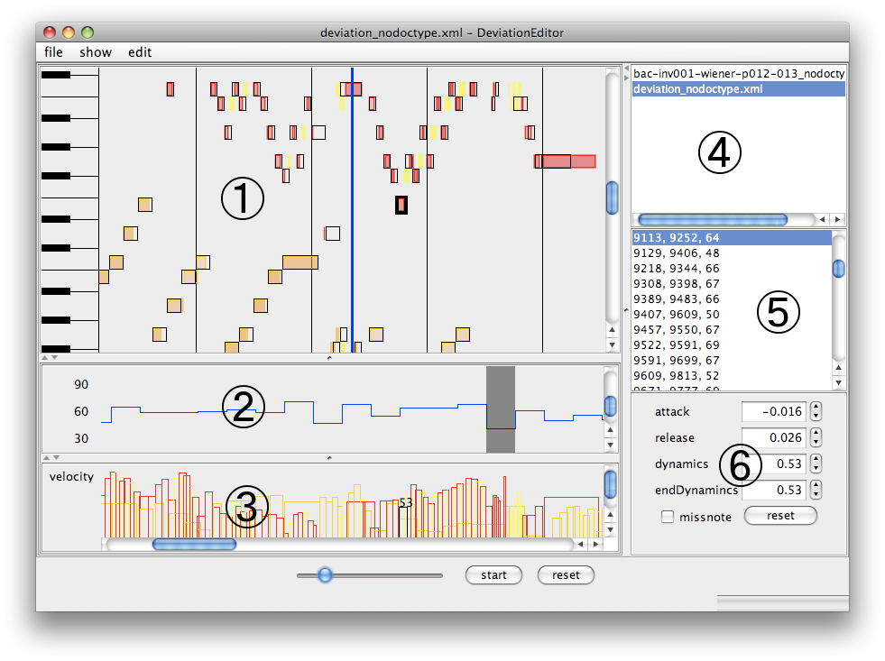

DevEditorは演奏の楽譜からの逸脱（演奏表情）を編集するためのツールです。このツールではデータフォーマットとして楽譜はMusicXML、演奏表情はDeviationInstanceXML形式を用います。読み込んだMusicXMLやDeviationInstanceXMLは演奏表情を編集して、DeviationInstanceXMLやCSVに出力することができます。

色のついた矩形がノート一つを表します。ノートはクリックで選択する事ができ、選択した状態で両端をドラッグするとそれぞれ発音時刻と消音時刻を編集することができます。色のついた矩形の下に表示されている黒線の枠は楽譜のノートを表しています。MusicXMLのノートにはvoiceという属性があり、番号が割り振られています。例えばピアノの楽譜だとメロディが１、伴奏が２など、主にパート分けのために用いられます。ピアノロール画面ではvoiceによってノートが色分けされています。
| extra note | 黄 |
| voice1 | 赤 |
| voice2 | オレンジ |
| voice3 | ピンク |
| voice4 | マゼンタ |
| other | 薄いマゼンタ |
ここでextra noteとは楽譜上にはなく、演奏表情として余分に弾かれたノートのことを指します。ノートの矩形の色の濃さは音量を表し、薄ければ小さく濃ければ大きく音が鳴ります。miss note（楽譜上には存在するが演奏表情として弾かれなかったノート）は矩形が塗りつぶされておらず、枠の線だけを表示します。
テンポカーブを表示します。テンポカーブは四分音符単位で編集することができ、マウスオーバーでハイライトされる部分が動かせます。カーブをドラッグすると値を変える事ができます。
各ノートのベロシティーを表示します。ノートはクリックで選択することができ、選択したノートはドラッグで値を変えられます。
開いたファイルを一覧表示します。新たにファイルを開くと追加され、選択すると対応する編集画面を表示します。
編集中ファイルのノートの一覧を表示します。それぞれonset,offset,notenumとして表示されます。リストを選択すると対応するノートが選択状態になります。
選択中のノートの詳細情報を表示します。それぞれの値を数字で編集することができます。
ファイルを開きます。MusicXMLかDeviationInstanceXMLを開くことができます。
ファイルを保存します。DeviationInstanceXMLとして保存されます。
ファイルをCSV形式で出力します。出力は二種類あり、tempo baseは四分音符ごとに1行出力し、列は順に小節、拍、テンポ、楽譜上での発音時刻、演奏と楽譜の発音時刻のずれ、楽譜上での消音時刻、演奏と楽譜の消音時刻のずれ、ノート番号、ヴェロシティを表します。ここで、時刻は全て四分音符を1.0とした少数で表されます。例えば次のようになります。
| measure | beat | tempo | onset | onset deviation | offset | offset deviation | notenum | velocity | onset | onset deviation | offset | offset deviation | notenum | velocity |
| 1 | 1 | 72 | 0.25 | 0.05 | 0.5 | 0.13 | 60 | 32 | ||||||
| 1 | 2 | 78 | 1.0 | 0.0 | 1.25 | -0.01 | 65 | 51 | 1.16 | 0.0 | 1.39 | 0.0 | 64 | 73 |
| 1 | 3 | 82 | 2.0 | 0.0 | 2.5 | -0.26 | 67 | 59 | ||||||
| 1 | 4 | 61 | 3.0 | -0.13 | 3.25 | -0.21 | 53 | 32 |
四分音符区間内に複数のノートがあった場合それらを列に追加していきます。１行目の列名は最も長い列数にあわせられます。
scc baseはノートごとに1行出力し、列はテンポ以外tempo baseと同じです。例えば次のようになります。
| measure | beat | onset | onset deviation | offset | offset deviation | notenum | velocity |
| 1 | 1 | 0.25 | 0.05 | 0.5 | 0.13 | 60 | 32 |
| 1 | 1 | 0.5 | 0.06 | 0.75 | 0.09 | 62 | 50 |
| 1 | 1 | 0.75 | 0.03 | 1.0 | 0.07 | 64 | 54 |
| 1 | 2 | 1.0 | 0.0 | 1.25 | -0.01 | 65 | 51 |
DevEditorを終了します。
実時間で表示します。
対応するノートの表示・非表示を切り替えます。
操作を一つやり直します。undoはメモリが許す限り行えます。
やり直しを取り消します。
MIDIシーケンサを指定します。